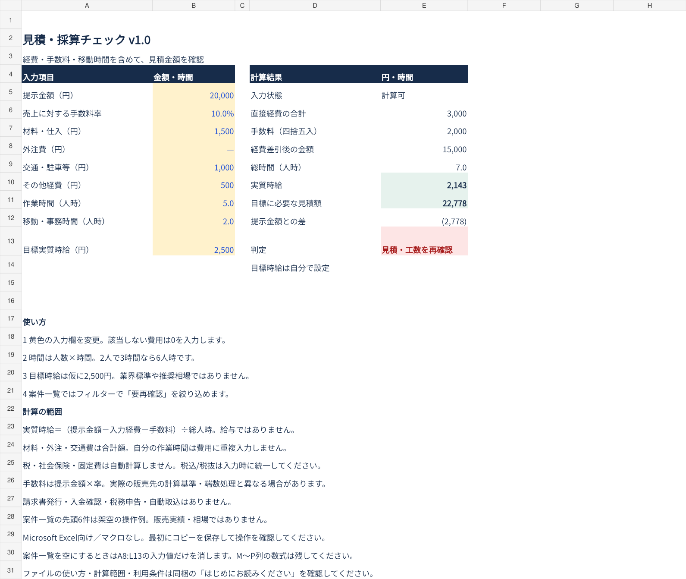
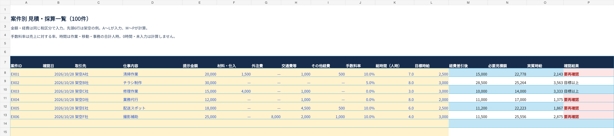

1件を確認し、案件ごとに比べる
- 材料・外注・交通などの経費と手数料率を入力
- 作業に加えて移動・事務時間も入力（2人で3時間なら6人時）
- 実質時給と、自分の目標に必要な見積額を確認
案件一覧は100件。フィルターで「要再確認」を絞り込めます。先頭6件は架空の入力例です。
見積チェックの実画面

案件一覧の実画面

画像はクリックで拡大できます。表示値は相場・導入成果・販売実績ではありません。
計算例：2万円の案件を7人時で対応
| 提示金額 | 20,000円 |
|---|---|
| 入力経費／手数料 | 3,000円／10%（2,000円） |
| 経費差引後／実質時給 | 15,000円／約2,143円 |
| 目標時給2,500円の場合の必要見積額 | 22,778円 |
目標2,500円は仮の入力値です。推奨相場ではなく、利用者が設定します。実質時給は給与・税引後所得ではありません。
購入前にご確認ください
開発時は別の表計算エンジンで数式の再計算、入力漏れ・負数・手数料100%・時間ゼロなどを検証しました。他の表計算ソフトやスマートフォン編集の動作は保証していません。
- 税金・社会保険・固定費は自動計算しません。未入力の経費は反映されません。
- 金額の税込・税抜は利用者が統一。手数料は売上×率を1円単位で四捨五入するため、販売先の方式と異なる場合があります。
- 請求書作成・入金確認・税務申告・自動取込・外部連携はありません。
- 正しい見積額、利益、受注、時短効果を保証する商品ではありません。
ZIPにExcel本体と日本語説明書を収録。購入した個人または1事業者の内部業務でコピー・編集できます。本体・改変版の再配布や再販売はできません。個別カスタマイズ・入力代行は別途です。
対応範囲を確認して購入するExcelを自分の業務に合わせたい方へ
項目や集計表の変更は有料カスタマイズとして個別相談。対応可否・料金・納期・作業範囲は内容確認後にお見積りし、合意後に着手します。
カスタマイズ相談を送る業種・困っている作業・希望する変更・Excel環境をお知らせください。個人情報や機密情報を含むデータは送らないでください。